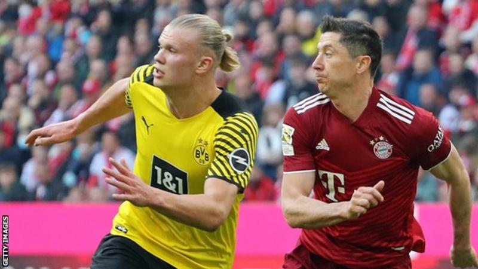
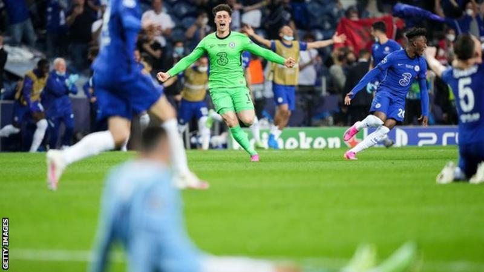

Uefa Champions League

|
Uefa Champions League |
|
Champions League draw: Busy group stages, strikers on the move and Ukrainian teams |
|---|

Who will the English sides face this season?
The group stage will be played over nine midweeks this season to fit in the World Cup.
So who is in it, who is going to win it, how does it work and how has the Russian invasion of
Ukraine affected things?
The Champions League takes the same format as always, with four English teams - Manchester
City, Liverpool, Chelsea and Tottenham - going straight into the group stage. Celtic are also in
the group stage.
The eight top seeds are the champions of each of Europe's top leagues plus the Europa League
winners - Real Madrid, Eintracht Frankfurt, Manchester City, AC Milan, Bayern Munich, Paris St-Germain,
Porto and Ajax.
England: Chelsea, Liverpool, Manchester City, Tottenham
Spain: Atletico Madrid, Barcelona, Real Madrid, Sevilla
Italy: Inter, Juventus, Milan, Napoli
Germany: Bayern Munich, Borussia Dortmund, Eintracht Frankfurt, Leipzig, Leverkusen
France: Marseille, Paris St-Germain
Portugal: Porto, Sporting Lisbon, Benfica
Netherlands: Ajax
Belgium: Club Bruges
Austria: Salzburg
Scotland: Celtic
Ukraine: Shakhtar Donetsk
Czech Republic: Viktoria Plzen
Israel: Maccabi Haifa

Real Madrid are the defending champions
Uefa has to fit the Champions League group stage into a smaller period of time because of the
Qatar World Cup.
The group stage starts on 6 September and runs to 2 November - a period of nine weeks
(compared to 12 weeks normally).
Usually it runs until the second week of December - but the World Cup kicks off on 20 November.
There will only be three weeks without Champions League games between the groups starting
and ending. Two of those land during the September international break - and the other in mid-
October has a full round of midweek Premier League games.
The knockout stages will be later than usual. The last-16 ties will be played over a month from 14
February to 15 March. The quarter-finals are in April and the semis in May.
The final is at Istanbul's Ataturk Olympic Stadium on 10 June 2023.
It was initially meant to be the venue for the 2020 final, and then the 2021 showpiece, but both
finals were moved to Portugal because of Covid restrictions.
Strikers on the move |
Top News |
|---|---|
|  |  |